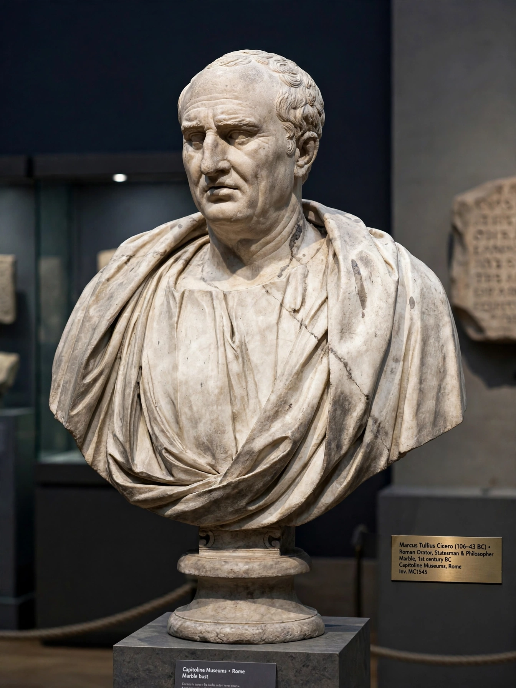

| Born | 3 January 106 BC, Arpinum, Italy, Roman Republic |
|---|---|
| Died | 7 December 43 BC (aged 63), Formia, Italy |
| Occupation | Statesman, lawyer, philosopher, orator |
| Office | Consul of Rome (63 BC) |
| Notable works | In Verrem; In Catilinam; Philippics; De Oratore; De Re Publica; De Officiis; De Natura Deorum |
| Era | Late Roman Republic |
Marcus Tullius Cicero (106 – 7 December 43 BC) was a Roman statesman, lawyer, scholar, philosopher, and academic sceptic who tried, during the political crises of the late Republic, to uphold republican principles. He is generally considered one of Rome's greatest orators and prose stylists, and the peak of Latin prose in the classical tradition that he largely created.

A bust of Cicero, Rome's greatest orator.
A novus homo from Arpinum, Cicero rose through the cursus honorum on the strength of his courtroom speaking, winning fame by prosecuting the corrupt governor Verres in 70 BC. As consul in 63 BC he exposed and suppressed the conspiracy of Catiline, executing five conspirators without trial — an act that led to his exile in 58 BC under a law of Clodius. Recalled the next year, he navigated the civil wars between Pompey and Caesar, and after Caesar's assassination attacked Mark Antony in the Philippics. Named in the proscriptions of the Second Triumvirate, he was captured and killed on 7 December 43 BC; his head and hands were displayed on the Rostra in Rome.
Cicero's surviving works include 58 speeches, treatises on rhetoric such as De Oratore, political philosophy (De Re Publica, De Legibus), and philosophical dialogues written in retirement — De Finibus, the Tusculan Disputations, De Natura Deorum, and De Officiis, the last addressed to his son. More than 900 of his letters survive, an unrivalled window on late-Republican life. He coined much of Latin's philosophical vocabulary, translating Greek concepts into terms still used today.
Rediscovered by Petrarch, Cicero's letters launched Renaissance humanism; his prose was the model of Latin style for over a millennium, and his political thought shaped republican ideas from Machiavelli to the American Founders. The younger Pliny and Horace wrote in a literary culture he had defined.